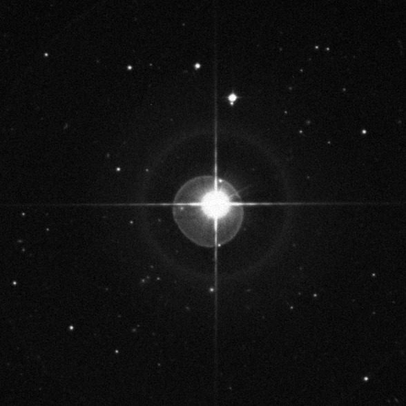
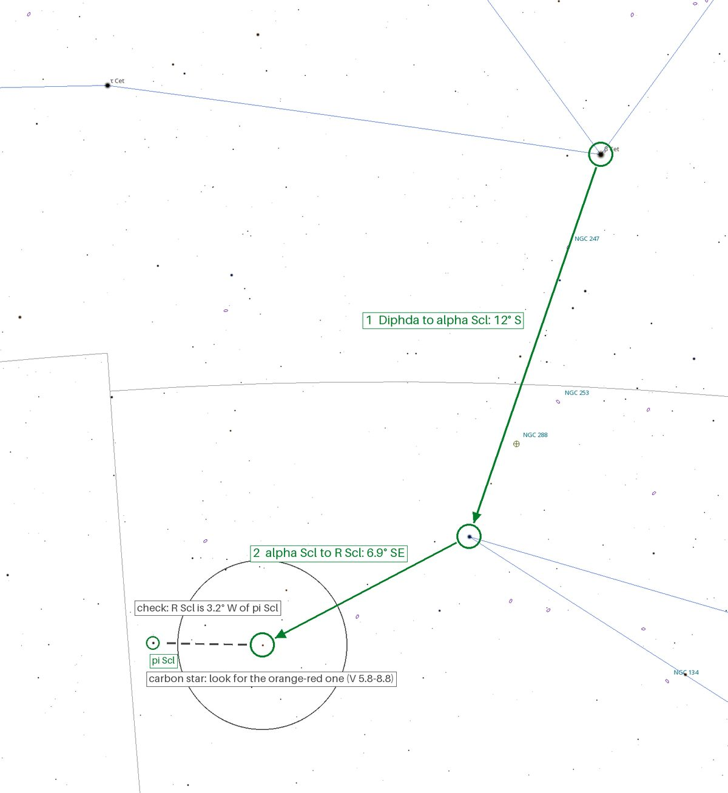
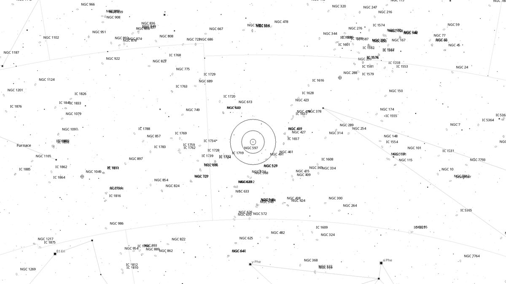
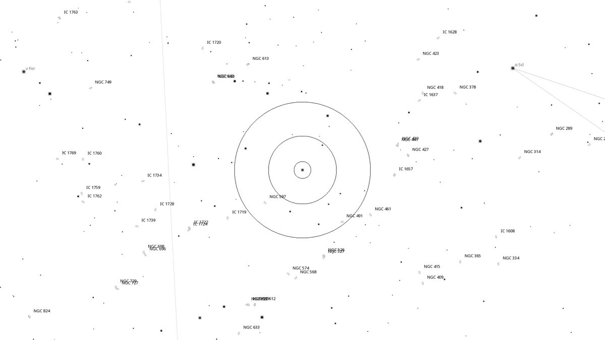
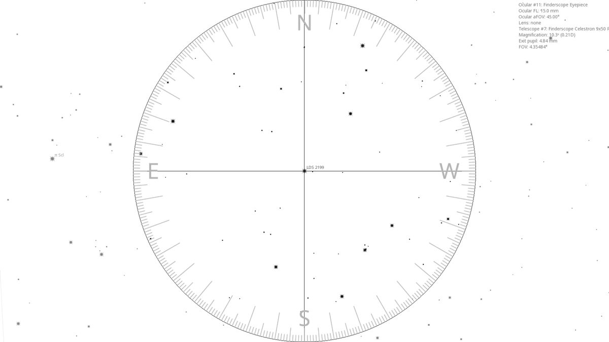
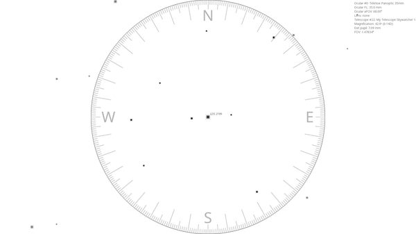

R Scl (CS)
| R.A. | Dec. | Size | Mag | SB | Class | Type | Distance | Chart |
|---|---|---|---|---|---|---|---|---|
| 01h 26m 59.6s | -32° 32′ 33.2″ | -- | 5.8--8.8 | -- | C-N5+ | CS | -- | -- |

Interactive Sky View
Background
R Sculptoris is a carbon star and a semiregular variable, ranging between magnitudes 5.8 and 8.8 over a period of about 370 days. Stellarium and SIMBAD both list it at V = 5.7, one moment in that cycle. Its spectral type, C-N5+, marks a cool giant whose atmosphere holds more carbon than oxygen. The carbon compounds absorb blue light, which gives these stars their orange-red colour, and R Scl is one of the brightest examples in the southern sky.
In 2012 ALMA found a thin, detached shell of gas around it, ejected in a thermal pulse a couple of thousand years ago, with a spiral running through it that is thought to be shaped by an unseen companion. Gaia's parallax puts the star ≈1,300 light-years away.
My Observing Notes
(Not yet observed)
Charts




